PIC (HMI + Sensor Subsystem) — Component Selection
1. OLED Display (HMI Output)
Option 1
| Solution | Pros | Cons |
|---|---|---|
| 0.96" 128×64 SSD1306 OLED (SPI/I²C, SMD module) 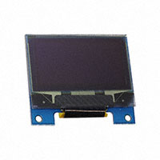 Monochrome OLED display, 128×64 resolution, 3.3V compatible Price: ≈ $X.XX/each Product Page |
- Extremely common with strong library support (u8g2, Adafruit) - Very low power consumption - Simple interface (I²C or SPI) - Compact footprint |
- Small display area limits UI readability - Limited graphical capability - Some variants ship configured for I²C only |
{kind=link}
Option 2
| Solution | Pros | Cons |
|---|---|---|
| 1.3" 128×64 SH1106 / SSD1309 SPI OLED (SMD module) 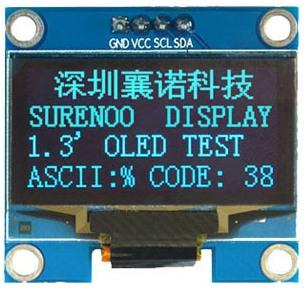 Larger monochrome OLED with SPI interface Price: ≈ $X.XX/each Product Pagehttps://www.pololu.com/product/3760Datasheet |
- Larger screen improves readability for hazard alerts - SPI interface allows faster refresh than I²C - Low power (no backlight required) - Good contrast for indoor use |
- Slightly larger PCB footprint - Must verify driver compatibility (SH1106 vs SSD1306) - Monochrome only |
{kind=link}
Option 3
| Solution | Pros | Cons |
|---|---|---|
| 1.3" 240×135 ST7789 SPI Color TFT (IPS) 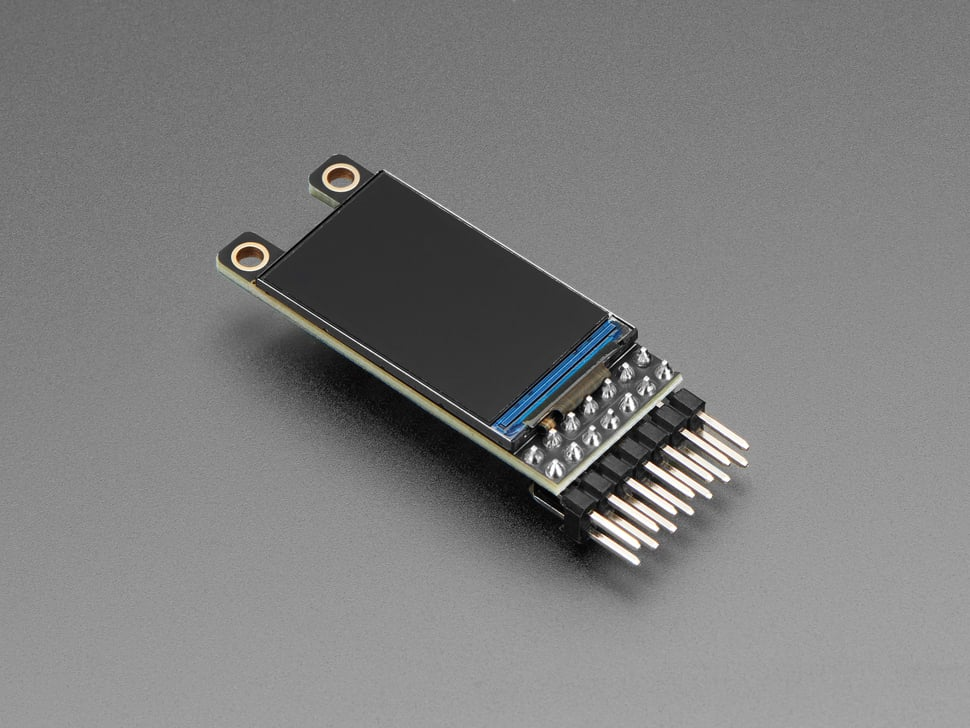 Color TFT display with SPI interface and backlight Price: ≈ $X.XX/each Product Page Datasheet |
- Color graphics and better UI visualization - Higher resolution - Wide viewing angles (IPS) - Strong Arduino/PIC driver support |
- Higher power draw due to backlight - More complex firmware - Requires backlight current management |
{kind=link}
Choice: Option 2 — 1.3" SPI OLED
Rationale: The 1.3" SPI OLED was selected because it provides the best balance between readability, simplicity, and power consumption for the HMI portion of this subsystem. Since this display is responsible for presenting hazard alerts and system status to the user, clarity is more important than color graphics. The larger 1.3" size improves visibility compared to the smaller 0.96" option without significantly increasing power usage.
Using SPI instead of I²C allows faster screen refresh rates, which is helpful when updating hazard messages or changing display states. Although a color TFT display would allow more advanced graphics, it would also increase power consumption and firmware complexity. For this project, a monochrome OLED is sufficient and keeps the system simpler and more efficient. Therefore, the 1.3" SPI OLED is the most practical and reliable choice.
2. IMU (Accelerometer + Gyroscope, ≥50 Hz)
Option 1
| Solution | Pros | Cons |
|---|---|---|
| ICM-42688-P (6-Axis IMU, QFN SMD) 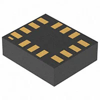 High-performance accelerometer + gyroscope with I²C/SPI Price: ≈ $X.XX/each Product Page Datasheet |
- Supports very high sample rates (>1kHz) - Low noise and high precision - FIFO buffering reduces MCU load - Low power modes available |
- QFN package is small and harder to solder - No built-in magnetometer |
{kind=link}
Option 2
| Solution | Pros | Cons |
|---|---|---|
| BNO055 (9-DOF with onboard fusion) 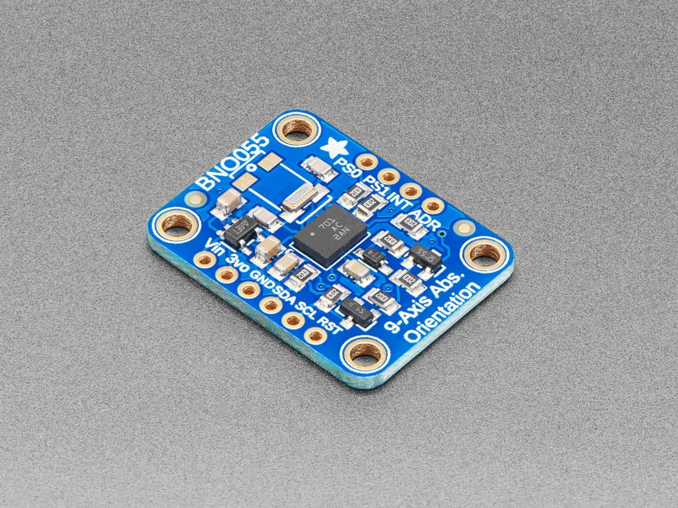 Accelerometer + Gyro + Magnetometer with built-in sensor fusion Price: ≈ $X.XX/each Product Page Datasheet |
- Built-in sensor fusion simplifies firmware - Outputs orientation directly - I²C interface - Good documentation |
- More expensive - Larger footprint - Fusion startup delay |
{kind=link}
Option 3
| Solution | Pros | Cons |
|---|---|---|
| MPU-6050 (6-Axis IMU) 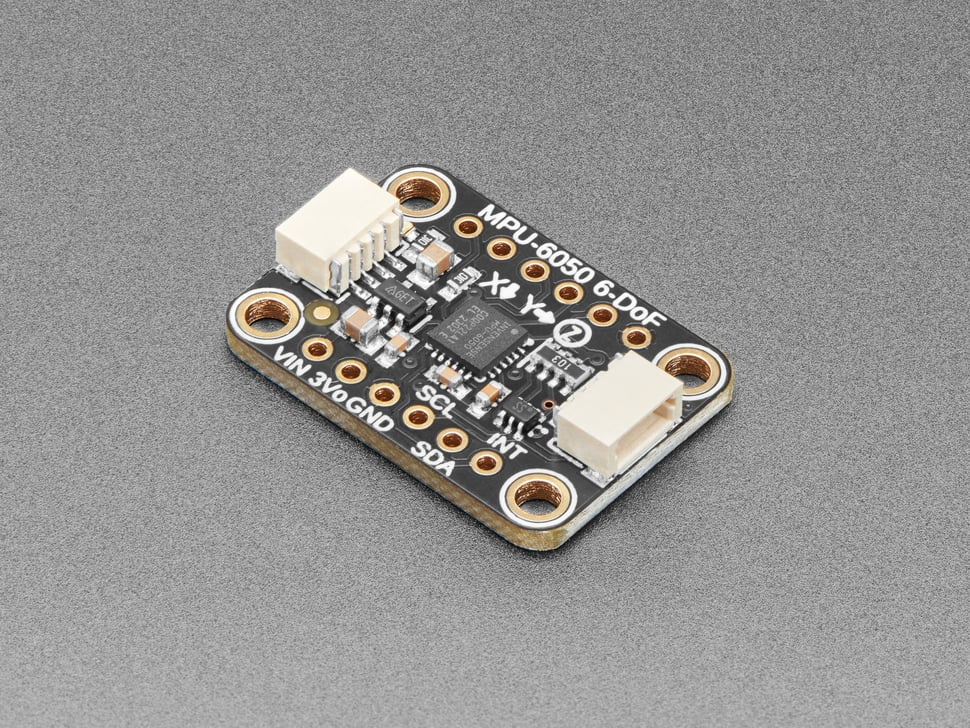 Accelerometer + Gyroscope combo with I²C interface Price: ≈ $X.XX/each Product Page |
- Very common and inexpensive - Strong community support - Simple I²C interface |
- Older generation sensor - Higher noise compared to modern parts - Limited long-term availability |
{kind=link}
Choice: Option 1 — ICM-42688-P
Rationale: The ICM-42688-P was selected because it exceeds the required 50 Hz sampling rate while maintaining low noise and good power efficiency. Since this subsystem uses motion data for hazard scoring and system monitoring, consistent and accurate measurements are critical. This sensor provides high sampling headroom, which ensures stable readings even if additional filtering or processing is required.
It also includes a FIFO buffer, which reduces the processing load on the microcontroller and improves timing reliability. Although the QFN package is smaller and slightly more difficult to solder, the performance and long-term reliability outweigh that concern. Compared to older sensors like the MPU-6050, this part offers better precision and modern support. For these reasons, the ICM-42688-P is the most suitable option.
3. Temperature & Humidity Sensor
Option 1
| Solution | Pros | Cons |
|---|---|---|
| HDC2080 (TI, I²C Humidity/Temp Sensor) 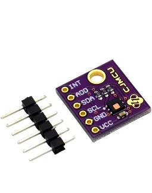 Low-power digital humidity and temperature sensor Price: ≈ $X.XX/each Product Page Datasheet |
- Very low power consumption - Good accuracy and stability - I²C interface - Strong manufacturer documentation |
- Requires proper PCB layout for accuracy - Needs pull-up resistors |
{kind=link}
Option 2
| Solution | Pros | Cons |
|---|---|---|
| AHT21 (I²C Humidity/Temp Sensor) 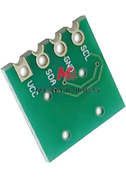 Compact humidity and temperature sensor Price: ≈ $X.XX/each Product Page Datasheet |
- Low cost - I²C compatible - Good availability |
- Slightly less accurate than TI parts - Requires careful voltage verification |
{kind=link}
Option 3
| Solution | Pros | Cons |
|---|---|---|
| DHT11 (Digital Temp/Humidity) 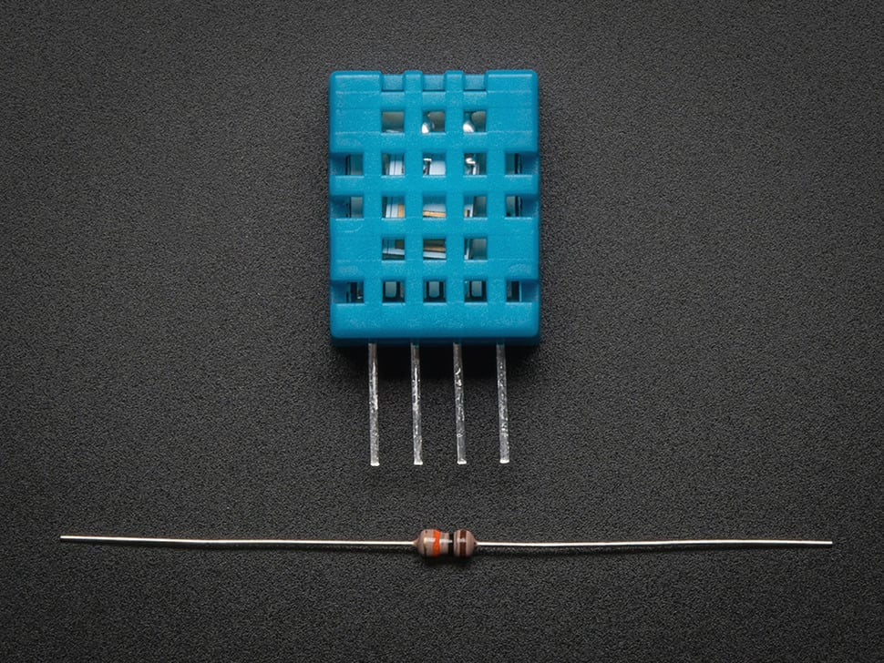 Single-wire temperature and humidity sensor Price: ≈ $X.XX/each Product Page Datasheet |
- Very inexpensive - Simple to prototype |
- Low accuracy - Timing-sensitive protocol - Not ideal for engineering validation |
{kind=link}
Choice: Option 1 — HDC2080
Rationale: The HDC2080 was selected because it provides reliable and accurate humidity and temperature measurements while consuming very little power. Since environmental data contributes to hazard scoring, measurement stability and accuracy are more important than simply choosing the cheapest option.
This sensor uses I²C communication, which integrates cleanly with the PIC microcontroller and matches the team’s communication strategy. It also has strong documentation and manufacturer support, which reduces design risk compared to lower-cost hobby sensors. While the AHT21 is also a reasonable option, the HDC2080 provides slightly better performance and long-term reliability. Therefore, it is the optimal choice for this subsystem.
4. User Input (Tactile Switches + LEDs)
Option 1
| Solution | Pros | Cons |
|---|---|---|
| 6×6mm SMD Tactile Switch 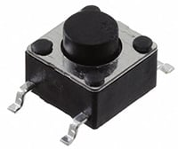 Surface-mount momentary pushbutton Price: ≈ $X.XX/each Product Page Datasheet |
- Easy to solder - Clear tactile feedback - Durable for repeated lab use |
- Larger PCB footprint |
{kind=link}
Option 2
| Solution | Pros | Cons |
|---|---|---|
| 4×4mm Low-Profile SMD Tact Switch 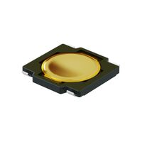 Compact surface-mount switch Price: ≈ $X.XX/each Product Page |
- Saves board space - Clean design aesthetic |
- Harder to press - Less tactile feedback |
{kind=link}
Option 3
| Solution | Pros | Cons |
|---|---|---|
| Capacitive Touch Button (SMD IC + pad) 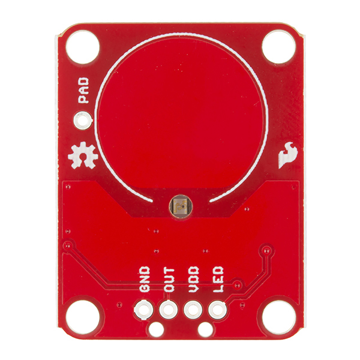 Touch-sensitive input Price: ≈ $X.XX/each Product Page Datasheet |
- No mechanical wear - Modern interface |
- Requires calibration - Susceptible to noise - Less intuitive feedback |
{kind=link}
Choice: Option 1 — 6×6mm SMD Tact Switch
Rationale: The 6×6mm surface-mount tactile switch was selected because it provides clear physical feedback and is easy to solder during PCB assembly. Since this board will be tested and demonstrated multiple times, durability and ease of use are important considerations.
Smaller switches would save board space but would be harder to press and more difficult to solder reliably. Capacitive touch input was considered, but it would add unnecessary firmware complexity and potential noise issues. A standard tactile switch combined with firmware debouncing provides a simple, reliable solution. For these reasons, the 6×6mm SMD tactile switch is the most practical choice.
5. 3.3V Switching Regulator
Option 1
| Solution | Pros | Cons |
|---|---|---|
| AP63203WU-7 (3.3V Buck Converter) 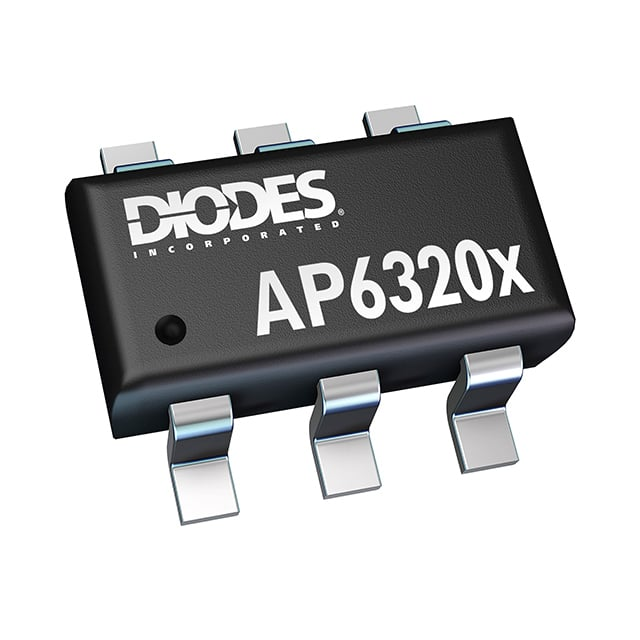 3A SMD switching regulator Price: ≈ $X.XX/each Product Page Datasheet |
- High current capability - Surface mount compliant - Good efficiency - Already used in team documentation |
- Requires external inductor and layout care |
{kind=link}
Option 2
| Solution | Pros | Cons |
|---|---|---|
| TPS62840 (3.3V Buck Converter) 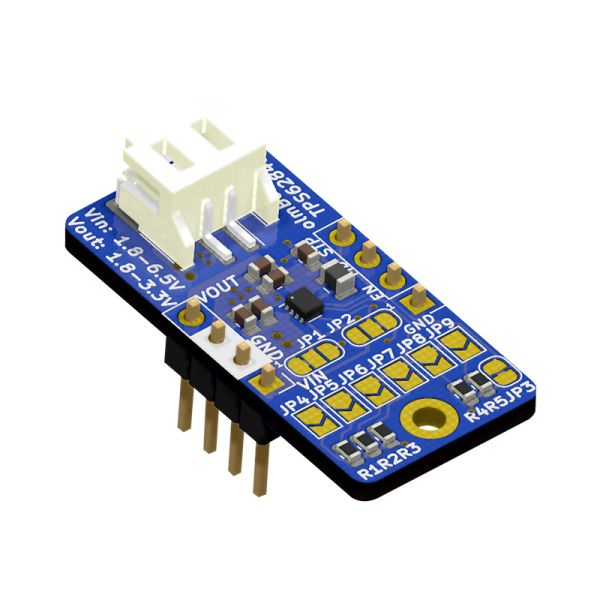 High-efficiency compact regulator Price: ≈ $X.XX/each Product Page Datasheet |
- Excellent efficiency - Low thermal dissipation - Strong transient response |
- Slightly higher cost - Smaller package (harder layout) |
{kind=link}
Option 3
| Solution | Pros | Cons |
|---|---|---|
| AMS1117-3.3 LDO 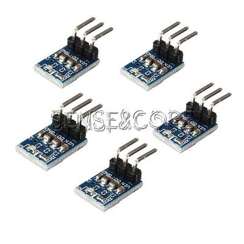 Linear voltage regulator Price: ≈ $X.XX/each Product Page Datasheet |
- Very simple design - Low component count |
- Poor efficiency - High heat dissipation - Not ideal for dynamic loads |
{kind=link}
Choice: Option 1 — AP63203WU-7
Rationale: The AP63203WU-7 switching regulator was selected because it provides sufficient current capacity with good efficiency while remaining surface-mount compliant. Since this subsystem includes a display, sensors, and microcontroller, stable 3.3V power is essential for reliable operation.
Compared to a linear regulator like the AMS1117, the switching regulator produces significantly less heat and wastes less power, especially under varying load conditions. Although switching regulators require additional external components and careful PCB layout, the improved efficiency and thermal performance make them a better long-term solution. Additionally, this regulator aligns with the team’s existing component selection, which simplifies integration and BOM management. For these reasons, the AP63203WU-7 is the optimal power solution.
Final Component Selection Summary
The table below summarizes the major active components selected for Laksh’s HMI & Sensor Subsystem.
This excludes passive components (resistors, capacitors, inductors), pull-up resistors, small filtering components, and standard PCB hardware.
| Subsystem | Component | Manufacturer | Key Specs | Price | Source |
|---|---|---|---|---|---|
| Microcontroller | PIC18F47Q10 | Microchip Technology | 8-bit MCU, 3.3V logic, I²C/SPI/UART support | $X.XX | DigiKey |
| OLED Display (HMI) | 1.3" 128×64 SPI OLED (SH1106/SSD1309) | (TBD Vendor) | Monochrome, SPI interface, 3.3V compatible | $X.XX | DigiKey |
| IMU (Motion Sensor) | ICM-42688-P | TDK InvenSense | 6-axis accel + gyro, FIFO buffer, I²C/SPI, >50Hz | $X.XX | DigiKey |
| Temp/Humidity Sensor | HDC2080 | Texas Instruments | I²C interface, low power, high accuracy | $X.XX | DigiKey |
| 3.3V Regulation | AP63203WU-7 | Diodes Inc. | 3A buck converter, high efficiency, SMD | $X.XX | DigiKey |
| User Input | 6×6mm SMD Tactile Switch | (TBD Vendor) | Momentary pushbutton, surface-mount | $X.XX | DigiKey |
| Status Indicators | 0805 SMD LEDs | (TBD Vendor) | 3.3V logic compatible with current-limiting resistor | $X.XX | DigiKey |
| Daisy-Chain Interface | 2×4 IDC Header (Ribbon Cable) | (TBD Vendor) | Standard UART ribbon interface (course requirement) | $X.XX | DigiKey |
Estimated Total Core Component Cost: ≈ \(18–\)25 per board
(excluding passives, PCB fabrication, shipping, and optional spare components)
Cost Discussion
The total cost of Laksh’s subsystem remains reasonable given the number of sensors and interface components required for real-time hazard monitoring and user interaction. The IMU represents one of the higher-cost components due to its precision sensing capabilities and FIFO support, but this cost is justified because motion data reliability is critical for hazard scoring.
The OLED display contributes moderate cost while significantly improving user feedback and system clarity. Compared to color TFT alternatives, the monochrome SPI OLED keeps power consumption and complexity lower while still meeting functional requirements.
The AP63203WU-7 switching regulator adds slight cost compared to basic LDO regulators, but it provides improved efficiency and reduced thermal stress, which increases system reliability. Overall, the selected components balance performance, accuracy, power efficiency, and manufacturability while staying within a reasonable budget for a student-designed embedded subsystem.